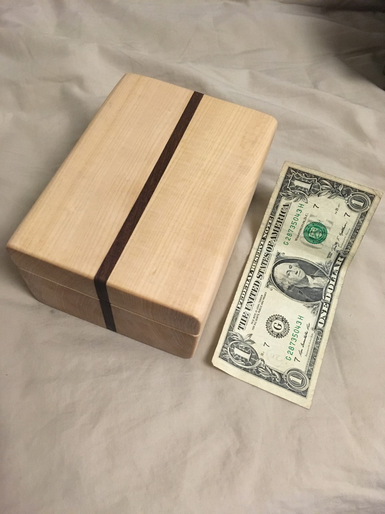
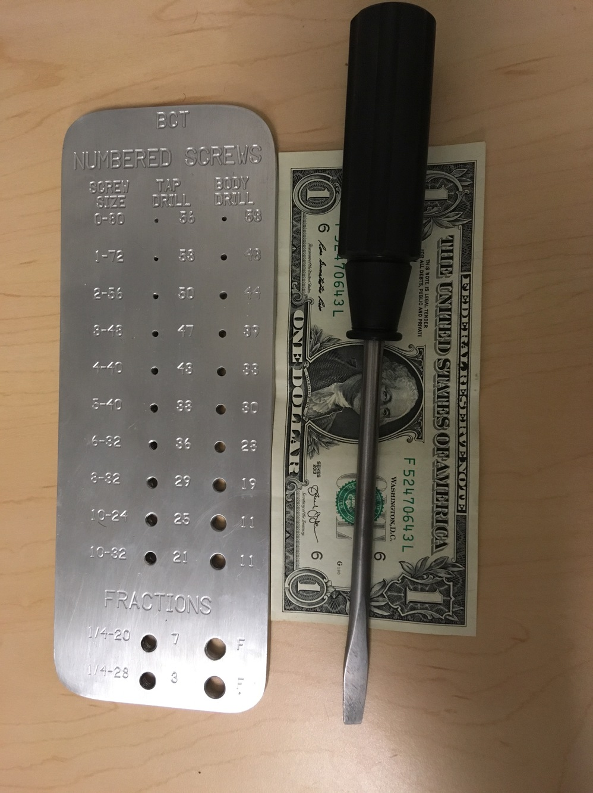
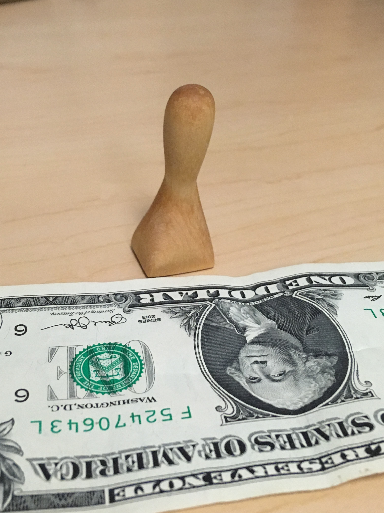
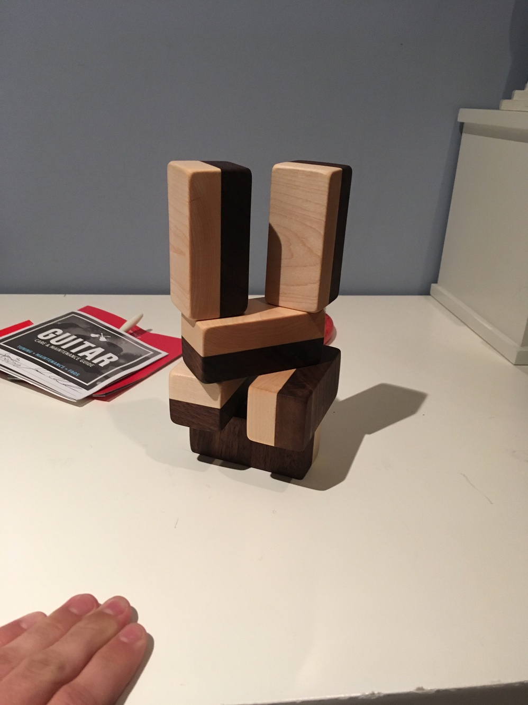

I enjoy making things out of wood. Dollar bill is for scale.
I wanted to spice of the classic box design by laminating a strip of walnut into the center. In addition, I went with a hollowed out design as apposed to a six-face approach.
This was made in my mechanical technology class. My first experience with a Bridgeport mill and forging metal.
My first shot at whittling. Not shaped after anything, but started as a square dowel.
Made for a friend of mine who is having a kid. Walnut and maple, finished with mineral oil. Absolutely no sharp edges or corners and I used foodsafe wood glue
